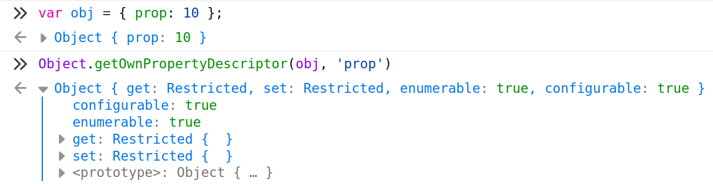

Property breakpoints
Allows you to pause on property get or set.
As a part of a DevTools property breakpoints are present in Firefox.
Under the hood
In Firefox property breakpoints are based on property descriptors
DIY property breakpoints
Nothing stops you from doing it yourself
var obj = { prop: 10 };
Object.defineProperty(obj, 'prop', {
get() { debugger; },
set(v) { debugger; },
});
obj.prop = 20; // debugger will stop here
Error happened here
Maybe try to reload the page?
Or restart browser?
Our code is fine the problem should be on your side.